A list and definitions of the default tools that appear in the ribbon on the left-hand side of the screen when you open FireAlpaca.
Brush Tool
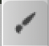
Select this tool to draw strokes on the canvas. You can change brushes using the "Brush" window and adjust settings (ex., size, transparency) through the "Brush Control" window.
Eraser Tool
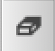
Select this tool to clear parts of the canvas. You may select different erasers through the "Brush" window and adjust brush size and transparency through the "Brush Control" window.
Dot Tool
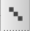
Select this tool to create pixelated strokes on the canvas. You may select a width of 1, 2, or 3 pixels. These controls are separate from the settings in the "Brush Control" window.
Move Tool
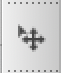
Use this tool to click and drag elements on the canvas.
Fill Tool
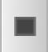
Use this tool to create a rectangle, polygon, or ellipse filled with the primary color selected.
Lasso Fill
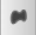
Use this tool to create a freehand shape filled with the primary color selected.
Bucket Tool
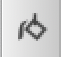
Select this tool and click an area of the canvas to color that area with the selected primary color. Adjust tolerance and expansion in the ribbon at the top of the screen.
Gradient Tool
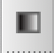
Use this tool to create a gradient using one or both of the selected colors in the "Color" window.
Select Tool
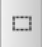
Use this tool to create a selection on the canvas in the shape of a rectangle, ellipse, or polygon.
Lasso Tool
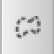
Use this tool to create a freehand selection on the canvas.
MagicWand Tool
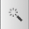
Select this tool and click on a point on the canvas to automatically select adjacent areas of the same color. In the top ribbon, you may change tolerance and expansion to adjust the sensitivity and area filled.
SelectPen Tool
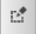
Use this tool to create a selection on the canvas in the texture of the current brush.
SelectErase Tool
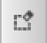
Use this tool to deselect parts of the selected area.
Text Tool
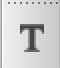
Use this tool to insert text on the canvas.
Operation Tool
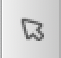
Use this tool to move and resize panel material.
Divide Tool
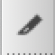
Use this tool to separate panel material into different sections.
Eyedropper Tool
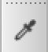
Use this tool to pick a color from a selected point on the canvas.
Hand Tool
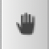
Click and drag using this tool to adjust your view of the canvas.